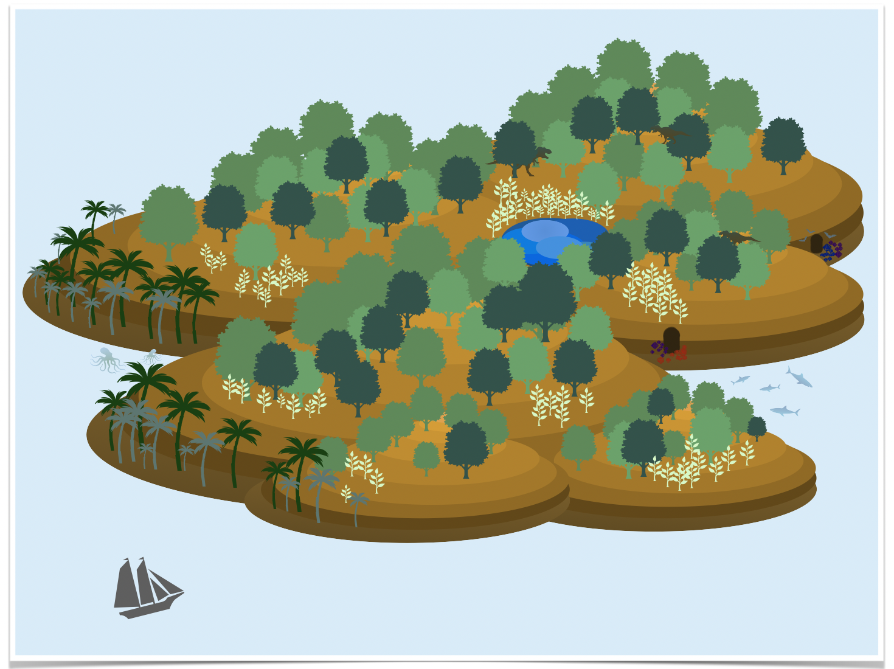
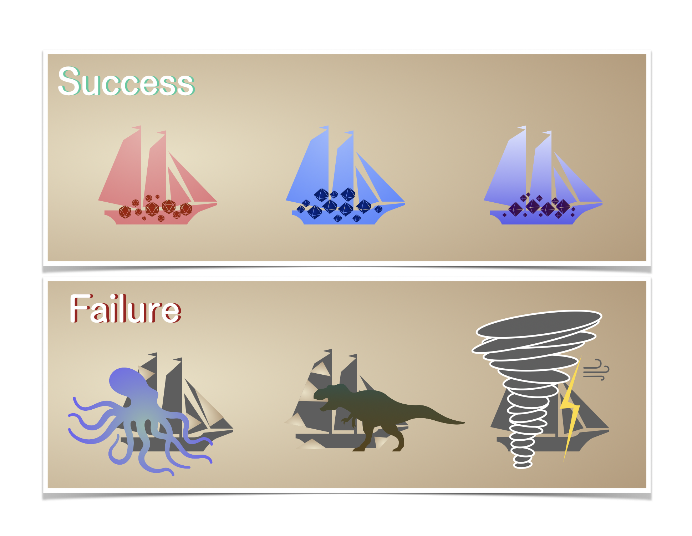
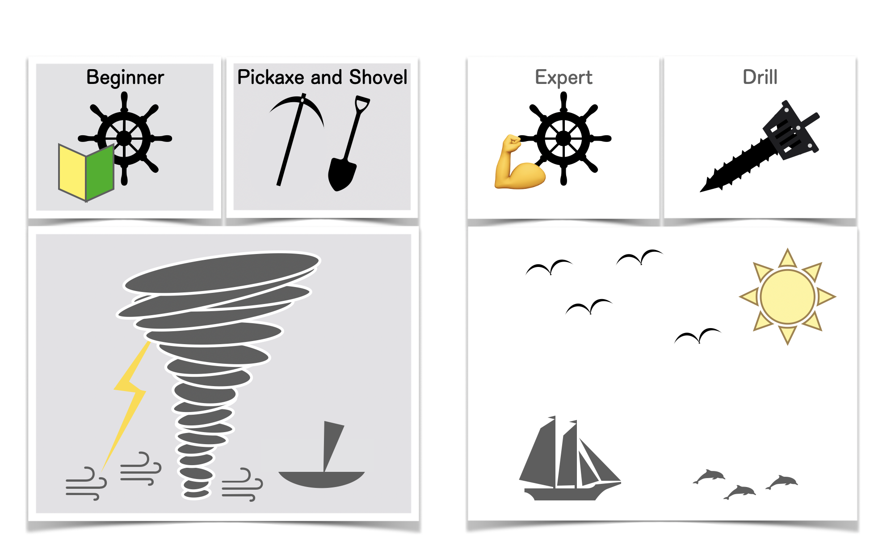
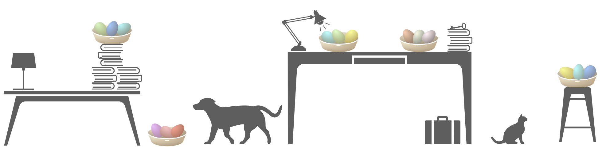

分散してれば安心！？ 見落としがちな分散投資のデメリット

この記事はこんな人に向けて書いています
- 分散投資に納得したい人
- 分散投資の落とし穴について知りたい人
伝えたいこと
- 投資をする上で分散することは王道戦略ではあるが、デメリットがないわけではない
- 分散投資は集中投資の最大リターンに大きく劣後する
- 分散投資は必要以上にリスクを取る可能性がある
はじめに
この記事の目的は、あなたが分散投資のメリット・デメリットを知り、納得感を持って判断することができるようになることです
基本的に堅実に投資したいのであれば、ほとんどの人は集中投資よりも分散投資をお勧めするでしょう
分散投資が王道とは聞くけれど、分散投資の良くないところはないの？ と疑問をお持ちの方もいらっしゃるかと思います
分散投資のメリットは様々な情報が出ているので、逆に今回は分散投資のデメリットについてお伝えします
この記事が少しでもあなたの人生のためになれば幸いです
目次
注意！
紹介している投資方法や投資対象は、利益を保証するものではありません。
場合によっては、損失を被ることもありますので投資判断はご自身でお願いいたします。
分散投資の前提
読み飛ばしたい方は→（分散投資のイメージを大航海時代で表してみた）
分散投資のメリットとデメリットについて触れる前に、分散投資の前提について考えます
分散投資の前提を一言で済ませると、いつかはリターンが返ってくるというのが前提ですね（当たり前ですが）
お金を貸しても、返してくれる人と返せない人がいます（法人も含む）
返せない人のほとんどは返したくても返せない人だと思われるので、返せない人をゼロにすることはできないという意味で、それは仕方のないことかもしれません
返せる人と返せない人の両者が判別不可能であるならば、お金を返せない人が一定数出現することを前提に全体に投資しよう！
これが分散投資の基本的な考え方になると思います
この考え方はその投資先全体で見れば、
となる場合に上手く機能します
この不等式が成立するのは、以下の二つの状態が維持されているからだと思います
- 借りる側は信用を差し出している
- 世界は利益追求と性善説が多数派を占める
経済はお金と信用で回っているので、経済が続く限り信用の重要性も普遍的であると考えられます
利益追求と社会貢献により経済は成長するので、一般に投資先が分散されているほど上で示した不等式が反転する確率は減少します
これを無視してリスクをとると大切なものを失う可能性もありますよね（不等式が反転する）
だから、被害に遭わないためにもリターンが返ってくる投資先を選ぶことが大前提になります
分散投資のイメージを大航海時代で表してみた
読み飛ばしたい方は→（分散投資のメリット）

例えば、大航海時代に新大陸を発見し、そこにはたくさんの資源があるとします
船の製造から航海、資源の運搬は一人ではほとんど不可能に近いと思われます
そこで協力者を募り 、みんなが提供したお金や時間以上に価値のある資源を持ち帰れば、みんなが利益を得ることができます
株式の起源はもおそらく同じような感じですよね
次に大航海時代で分散投資を考えてみます
大航海時代なので、複数の船が出航する場合を考えます
残念ながらすべての船が大陸に辿り着き、無事に資源を持ち帰ることができるとは限りません
嵐に遭遇して船が壊れたり、大陸に到着しても資源をうまく取り出すことができないかもしれません
旧大陸には生息していない危険な獣がいるかもしれません。
もしくはそもそも新大陸に辿り着けるかもわかりません。
出資する側は安全なのに、そんな危険なところに他人を派遣するなんて酷いと思うかもしれません
しかし、出資する側は資金を提供しているのでプロジェクトがうまくいかなくても出資したお金は返ってきません。
なので、投資家にもまったく痛みがないというわけではないです
もし自分が出資するなら、プロジェクトがうまくいかなかった時の痛みを極力和らげようと考えるでしょう
その痛みを緩和する一つの方法として分散投資があります
例えば、一つの船にだけ出資してうまくいかなかった場合は、出資したすべてを失うことになります
もちろんうまくいけばそれでいいのですが、うまくいくかは運にも左右されるのでそれを見極めるのはなかなか難しいでしょう
一方で複数の船に出資することで、仮に一部の船が資源を持ち帰ることができなくても、うまく持ち帰ることができた船からは一定のリターンを得ることができます
そんな感じで大航海時代を舞台に分散投資をイメージで簡単に説明してみました
分散投資のメリット
読み飛ばしたい方は→（分散投資のデメリット）
分散投資には以下のようなのメリットがあります
- 安定したリターン
- 集中投資よりも元本割れしにくい
- 値動きが比較的小さいため、精神的に安定しやすい
- インデックス投資であれば、資本主義が崩壊しない限り価値が実質的にゼロならない
安定したリターン
複数の企業に投資することで、一つの企業に内在するリスクを軽減することができます
元本割れしにくい
優良な投資先であれば、15~20年程度保有することで過去データでは元本割れしないとされています
優良な投資先は米国や世界に幅広く分散できるインデックスだと言われています
値動きが比較的小さいため、精神的に安定しやすい
一般的に、日々の値動きが安定しているため、株価が気になる場合は分散する方が心穏やかにいられるでしょう
これは長期で積み立てて放置している人にはそこまでのメリットではないかもしれませんね
世界に幅広く分散されたインデックス投資であれば、資本主義が崩壊しない限り価値が実質的にゼロにはなりません
なぜならインデックス投資をしていて、価値がゼロになるということは投資先の株式市場が崩壊している事になるからです
株式投資は複利の力を使うことで長期に渡って投資した場合、資産が増加している可能性が高いです
株式投資のメリットについては以下の記事にまとめています👇

資産形成で株式がおすすめな理由5選
分散投資のデメリット
読み飛ばしたい方は→（「卵を一つのカゴに盛るな！ そしてカゴの場所にも注意せよ！」）
分散投資はメリットが多く、王道の投資戦略ではありますが、デメリットも少なからずあります
- 集中投資の最大リターンに大きく劣後する
- 取る必要のないリスクまでとってしまう可能性がある
集中投資の最大リターンに大きく劣後する
分散投資は集中投資よりも成長率の悪い企業にも投資しています
投資する前に成長する企業を予測することができるならば、その企業だけに集中投資することで分散投資よりも大きなリターンを得ることができるでしょう
大航海時代で例えるなら、悪天候の中で、未熟な航海士、耐久性の低い船、ツルハシやシャベルで新大陸に向かうよりも、天気が穏やかな日に、熟練の航海士、屈強な船、電動ドリルで向かう方が資源を持ち帰ってくれそうな気がしますよね
それを現代に置き換えて国や企業を見極めるのがファンダメンタルズになるのですが、今回は割愛します
取る必要のないリスクまでとってしまう可能性がある
分散によってリスクを小さくすることができる一方で、それぞれのリスクごとに発生確率が異なるため、分散の程度によってはそれらのリスクが最小になるとは限りません
またまた大航海時代で言うならば、明らかに資源を取ってこれそうにないプロジェクトにも出資してしまうパターンがわかりやすいと思います
例えば、分散をやり過ぎると周りはそれなりの船を用意しているのに、私たちはイカダで資源を取ってきます！ と言う人たちに出資してしまうかもしれません
いやいやさすがにイカダはないでしょ！ と思われるかもしれません。確かにイカダはないかもしれませんね
では、イカダであることを知らなければどうでしょう？
数百、あるいは数千の船に分散投資することができると仮定して、それらすべての船を目視で確認しますか？
確認する投資家もいるとは思いますが、多数派の意見としては面倒臭いと言うのが本音でしょう
現代では投資信託などを通してかなり少額から数百、数千の企業に分散投資できるようになりました
それ自体は喜ばしいことで私もその恩恵を受けていますし、本当に感謝しております
一方で、広く分散されているが故に投資先についての注目度は低下する傾向にあるとも思います
イカダで航海する企業は存在しないかもしれませんが、投資先となるすべての企業がどのような企業活動をしているのか私は完全には把握できていないのが正直なところです
そもそもみんながやっているからとか、信用できるからという理由で把握する必要はないのかもしれません
インデックス投資であれば長期で見れば資本主義が崩壊しない限りおそらく安泰だとは思われます
しかし株主は出資したお金に対して有限責任があるので、完全に把握できていないものに投資しているという矛盾がなかなかに歪んでいる気もしています
「卵を一つのカゴに盛るな！ そしてカゴの場所にも注意せよ！」
読み飛ばしたい方は→（まとめ）
分散投資を表現する有名すぎる言葉にこんなものがあります
「卵を一つのカゴに盛るな」
投資に関心のある方であれば、一度は耳にしたことがある言葉でしょう
分散投資がいかに重要であるかを説く簡潔な言葉として素晴らしい表現だと思います
分散投資は重要ではありますが、本記事では分散投資のデメリットについて考えてみました
そこで有名なこの言葉の後ろに恐れ多くも一言付け加えてみようと思いました
考えた末に、
「卵を一つのカゴに盛るな！ そしてカゴの場所にも注意せよ！」
完全に蛇足ではありますが、分散されているから安心安全という短絡的思考を戒めるという点では意味のあることかなと思っています
一つの考えばかりに囚われて本質を見失ってはいけない
思考停止で分散投資することは王道ではあります
しかし、後悔につながる可能性もあることを伝えたかったので、この記事を書きました
結局、大切なのは自分の頭で考えることですよね
まとめ
目次へ戻りたい方は👉（目次）
分散投資は集中投資よりも最大リターンが小さかったり、必要以上にリスクを取る可能性があるというデメリットがあります
しかし、やはり投資の王道は分散投資であることに変わりはないと考えています
物事には様々な側面があり、メリットやデメリットを知った上で判断することが大切です
リスクをとって投資をしているのだから、その中では堅実にリスクを極力とらないと考えるのか
自分のリスク許容度の範囲内で、適正なリスクとリターンにするために分散するのがやはり王道ですかね
リスク許容度は3つの資本でおおよそ決まると私は考えています
リスク許容度については以下の記事にまとめています👇
リスクとリスク許容度について
分散投資と集中投資に関しても、それぞれの良さを理解した上で自分で決断していけたらいいですね
記事内容に誤りなどがございましたら、Twitter(@Siesta_FIRE)などで優しくお知らせいただけると幸いです
2022/02/20
ページの先頭へ戻る👆